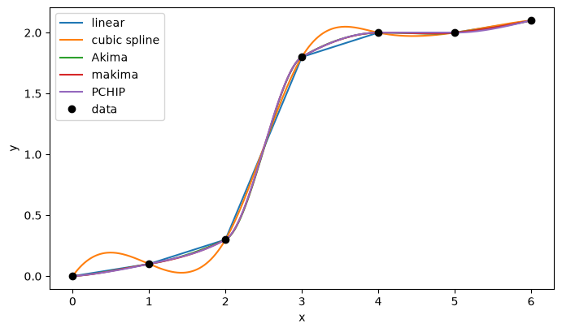
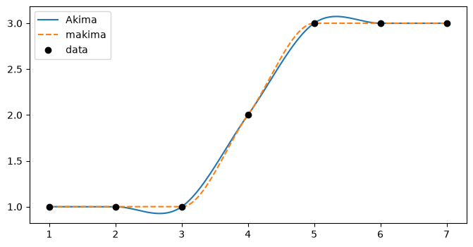

Interpolation with scipy.interpolate (1-D)#
Given data \((x_i, y_i)\), build a function \(p\) with \(p(x_i) = y_i\) and evaluate it between the data points. Every method below is used the same way: build once, then evaluate at as many new points as you like.
method |
call |
continuous |
local? |
overshoot? |
|---|---|---|---|---|
linear |
|
\(p\) |
yes |
never |
cubic spline |
|
\(p, p', p''\) |
no |
can overshoot |
Akima |
|
\(p, p'\) |
yes |
small, sometimes |
modified Akima |
|
\(p, p'\) |
yes |
small, rarely |
PCHIP |
|
\(p, p'\) |
yes |
never between monotone data |
More details: SciPy User Guide, Interpolation → 1-D interpolation: https://docs.scipy.org/doc/scipy/tutorial/interpolate/1D.html#tutorial-interpolate-1dsection
Linear: straight lines between neighbours. Simple and safe, but has corners.
Cubic spline: the smoothest piecewise cubic. All slopes are solved together, so one data point affects the whole curve.
Akima, makima, PCHIP: piecewise cubics whose slopes are chosen locally from nearby data. They give up continuity of \(p''\) to avoid wiggles.
The \(x\) values must be increasing.
import numpy as np
import matplotlib.pyplot as plt
import scipy.interpolate as si
Example 1: the running example from class#
Seven points that rise and then level off. We build all five interpolants and evaluate them on a fine grid.
x = np.array([0, 1, 2, 3, 4, 5, 6.])
y = np.array([0, 0.1, 0.3, 1.8, 2.0, 2.0, 2.1])
names = ["linear", "cubic spline", "Akima", "makima", "PCHIP"]
methods = [
lambda xn: np.interp(xn, x, y),
si.CubicSpline(x, y),
si.Akima1DInterpolator(x, y),
si.Akima1DInterpolator(x, y, method="makima"),
si.PchipInterpolator(x, y),
]
xnew = np.linspace(0, 6, 601)
fig, ax = plt.subplots(figsize=(8, 4.5))
for name, p in zip(names, methods):
ax.plot(xnew, p(xnew), label=name)
ax.plot(x, y, "ko", label="data")
ax.set_xlabel("x"); ax.set_ylabel("y")
ax.legend()
plt.show()

All five curves pass through the data. To compare them we check two things on the fine grid:
range: do the values stay inside \([\min y, \max y] = [0, 2.1]\)?
monotone: the data never decrease, so does the curve also never decrease?
print(f"{'method':13s} {'min':>8s} {'max':>8s} never decreases?")
for name, p in zip(names, methods):
v = p(xnew)
increasing = np.all(np.diff(v) >= -1e-12)
print(f"{name:13s} {v.min():8.4f} {v.max():8.4f} {increasing}")
method min max never decreases?
linear 0.0000 2.1000 True
cubic spline 0.0000 2.1000 False
Akima 0.0000 2.1000 False
makima 0.0000 2.1000 False
PCHIP 0.0000 2.1000 True
Linear and PCHIP keep the shape of the data: they stay in range and never decrease.
The cubic spline is the smoothest, but it goes down in places although the data only go up.
Akima and makima stay in range, but dip very slightly (by less than 0.01) between \(x = 4\) and \(x = 5\), where the data are flat. To see it, add
ax.set_xlim(3.5, 5.5); ax.set_ylim(1.95, 2.05)to the plot.
Example 2: Akima vs makima on flat data#
The original Akima method has a known weakness: when the data are flat on both sides of a node, it can overshoot.
method="makima" (modified Akima) changes the slope weights to fix this.
x2 = np.array([1, 2, 3, 4, 5, 6, 7.])
y2 = np.array([1, 1, 1, 2, 3, 3, 3.])
xnew2 = np.linspace(1, 7, 601)
akima = si.Akima1DInterpolator(x2, y2)
makima = si.Akima1DInterpolator(x2, y2, method="makima")
fig, ax = plt.subplots(figsize=(8, 4))
ax.plot(xnew2, akima(xnew2), label="Akima")
ax.plot(xnew2, makima(xnew2), "--", label="makima")
ax.plot(x2, y2, "ko", label="data")
ax.legend()
plt.show()
for name, p in [("Akima", akima), ("makima", makima)]:
v = p(xnew2)
print(f"{name:7s} min = {v.min():.4f} max = {v.max():.4f}")

Akima min = 0.9259 max = 3.0741
makima min = 1.0000 max = 3.0000
Akima dips below 1 and rises above 3, outside the data range.
makima stays in \([1, 3]\). If you use Akima, prefer
method="makima".
Example 3: accuracy on a smooth function#
When the data come from a smooth function, we can measure the error. Sample \(f(x) = \sin x\) on \([0, 2\pi]\) with \(n\) equally spaced points and compute the maximum error \(\max |p(x) - f(x)|\) on a fine grid.
f = np.sin
xf = np.linspace(0, 2*np.pi, 2001)
print(f"{'n':>4s}" + "".join(f"{name:>14s}" for name in names))
for n in [6, 11, 21, 41]:
xs = np.linspace(0, 2*np.pi, n)
ys = f(xs)
interps = [
lambda xn: np.interp(xn, xs, ys),
si.CubicSpline(xs, ys),
si.Akima1DInterpolator(xs, ys),
si.Akima1DInterpolator(xs, ys, method="makima"),
si.PchipInterpolator(xs, ys),
]
errs = [np.max(np.abs(p(xf) - f(xf))) for p in interps]
print(f"{n:4d}" + "".join(f"{e:14.2e}" for e in errs))
n linear cubic spline Akima makima PCHIP
6 1.82e-01 6.48e-02 7.21e-02 7.29e-02 1.12e-01
11 4.89e-02 2.65e-03 1.55e-02 1.32e-02 4.89e-02
21 1.22e-02 8.75e-05 1.98e-03 3.39e-03 3.62e-03
41 3.07e-03 2.77e-06 2.48e-04 8.97e-04 9.11e-04
For smooth data the cubic spline is the most accurate, and its error falls fastest as \(n\) grows.
Linear is the least accurate: doubling the points cuts its error by about 4, as in class (\(O(h^2)\)).
There is a trade-off: the smoothest method is the most accurate on smooth data, while the local methods are safer on data with jumps or flat parts.
Exercises#
Syntax for each method
method |
build |
evaluate |
|---|---|---|
linear |
(none) |
|
cubic spline |
|
|
Akima |
|
|
modified Akima |
|
|
PCHIP |
|
|
useful extra |
call |
|---|---|
\(n\) equally spaced points on \([a, b]\) |
|
sample a function at those points |
|
first derivative \(p'\) (not for |
|
natural end conditions, \(p'' = 0\) at both ends |
|
one polynomial of degree \(n\) through \(n+1\) points |
|
copy an array, then change element |
|
checking a curve |
call |
|---|---|
smallest and largest value |
|
maximum error against a known \(f\) |
|
never decreasing? |
|
plotting |
call |
|---|---|
create a figure and axes |
|
plot a curve with a label |
|
plot the data points |
|
horizontal line \(y = c\) |
|
show the legend |
|
Exercise 1. The Runge function \(f(x) = \dfrac{1}{1 + 25x^2}\) on \([-1, 1]\).
(a) Sample \(f\) at 11 equally spaced points. Interpolate with all five methods.
Evaluate the fitted curves on a finer mesh of 601 points, xnew = np.linspace(-1, 1, 601), and plot them together with \(f\).
(b) Print the maximum error \(\max|p(x) - f(x)|\) for each method. Which method is the most accurate?
(c) Compare with one polynomial of degree 10 through the same 11 points (Idea 2 from class):
coef = np.polyfit(xs, ys, 10) # the 11 coefficients, highest power first
v = np.polyval(coef, xnew) # evaluate the polynomial at xnew
np.polyfit(x, y, deg) finds the polynomial of degree deg closest to the data.
With 11 points and degree 10 there are exactly as many coefficients as points, so the polynomial passes through every point: it is the interpolating polynomial.
Print its maximum error and plot it with the other methods. How do the piecewise methods compare, and why?
# Exercise 1
Exercise 2. A drug concentration \(c\) (mg/L) is measured in the blood at times \(t\) (hours):
t = np.array([0, 1, 2, 4, 6, 8, 12, 24.])
c = np.array([0, 10, 8, 5, 3, 2, 1, 0.1])
(a) Interpolate with all five methods. Evaluate the fitted curves on a finer mesh of 601 points, tnew = np.linspace(0, 24, 601), and plot them together with the data.
(b) For each method, print the maximum of the fitted curve, p(tnew).max() (for linear: np.interp(tnew, t, c).max()).
The highest measurement is 10 mg/L. Which methods predict a higher peak? Is that believable?
# Exercise 2